Background. The data is from a study of lipid metabolism by Callow et al (2000). The apolipoprotein AI (ApoAI) gene is known to play a pivotal role in high density lipoprotein (HDL) metabolism. Mouse which have the ApoAI gene knocked out have very low HDL cholesterol levels. The purpose of this experiment is to determine how ApoAI deficiency affects the action of other genes in the liver, with the idea that this will help determine the molecular pathways through which ApoAI operates.
Hybridizations. The experiment compared 8 ApoAI knockout mice with 8 normal C57BL/6 ("black six") mice, the control mice. For each of these 16 mice, target mRNA was obtained from liver tissue and labelled using a Cy5 dye. The RNA from each mouse was hybridized to a separate microarray. Common reference RNA was labelled with Cy3 dye and used for all the arrays. The reference RNA was obtained by pooling RNA extracted from the 8 control mice.
| Number of arrays | Red | Green |
| 8 | Normal "black six" mice | Pooled reference |
| 8 | ApoAI knockout | Pooled reference |
This is an example of a single comparison experiment using a common reference. The fact that the comparison is made by way of a common reference rather than directly as for the swirl experiment makes this, for each gene, a two-sample rather than a single-sample setup.
For this example, you will need the file ApoAIArraysLoaded.lma, which can be downloaded from
http://bioinf.wehi.edu.au/limmaGUI/DataSets.html.
The targets for this data set are shown below.
From the file menu, select Open.
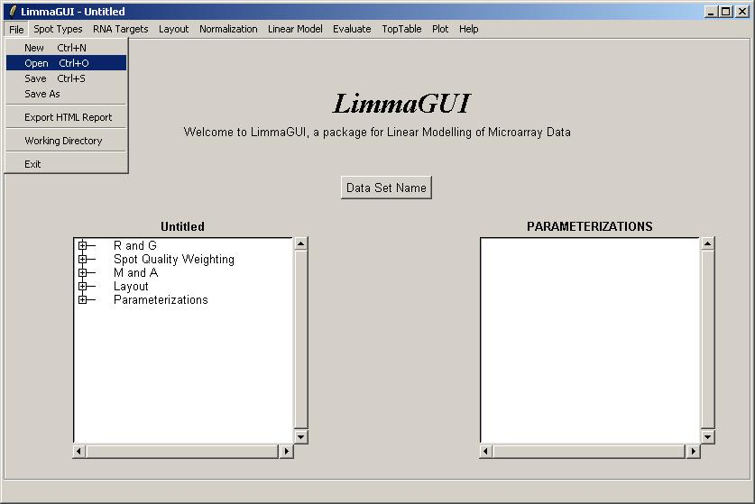Open the file, ApoAIArraysLoaded.lma. This file can be downloaded from the URL given above.
Advanced users may be interested to know that a Limma (.lma) file is really just an RData file,
so it can easily be loaded into an R session. However, it may appear more complicated than
standard RData files associated with the limma package because it allows for multiple
parameterizations and stores them in a list data structure called ParameterizationList.
After loading ApoAIArraysLoaded.lma, it is evident that no parameterizations have been created yet.
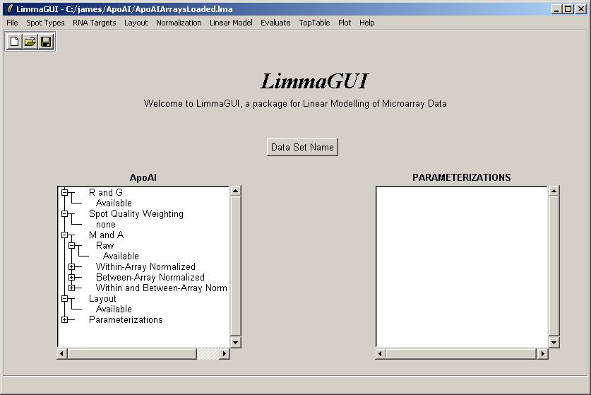From the Plot menu, click on "M Box Plot".
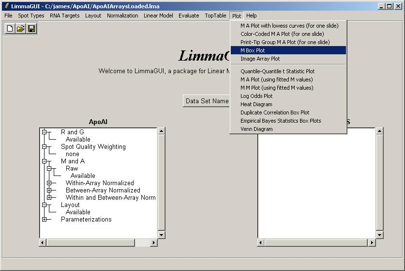Select plot by slide.
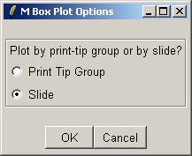Choose to normalize within arrays.

Choose not to normalize between arrays (i.e. click "no", which is the default value).
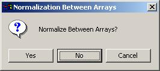The M box plot is shown below. As there is not much difference in scale between the different arrays, we won't normalize between arrays for this data set.
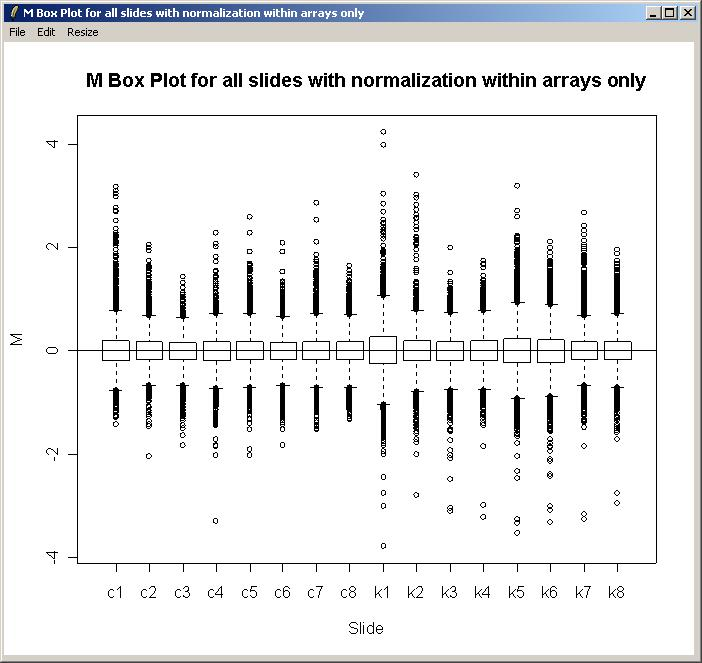We will now compute a linear model for this set of arrays. As we have three types of RNA (Reference, Wild Type and ApoAI Knockout), we can estimate two parameters from the linear model (i.e. one less than the number of RNA types). The parameterization has already been created and loaded in ApoAI.lma. Click on "Compute Linear Model Fit" from the Linear Model menu.
From the Linear Model menu, click "Compute Linear Model Fit".
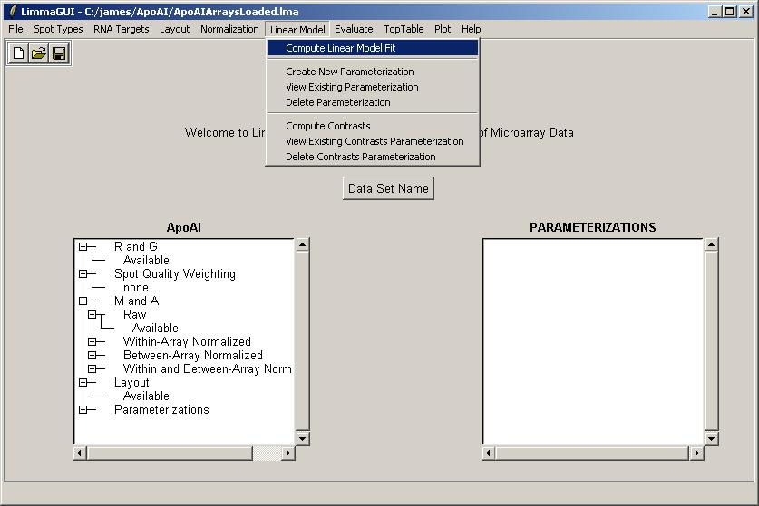Selected "Yes" to create a new parameterization
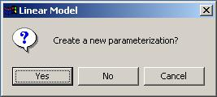Include all of the spots in the linear model. (Sometimes we would omit the controls and blanks.)
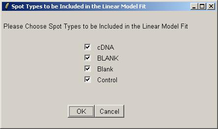Use the drop-down combo boxes to select two parameters, one comparing Wild Type with Reference and one comparing Knockout with Wild Type.
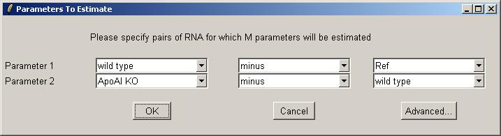Give a name for the parameterization (i.e. the choice of parameters).
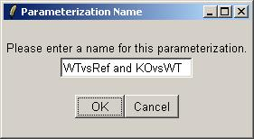Choose to normalize within arrays.
Use the default within-array normalization method (print-tip group loess).

Choose not to normalize between arrays.
There are no duplicates in this data set, i.e. there is one print of each gene, so leave the duplicate options at their default values.
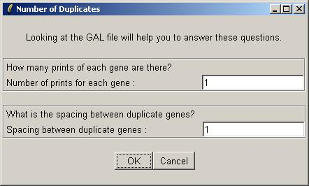We will now request at a table of genes ranked in order of evidence for differential expression (more precisely, ranked by the B statistic, which estimates the log odds of differential expression for each gene). From the TopTable menu, select "Table of Genes Ranked in order of Differential Expression".
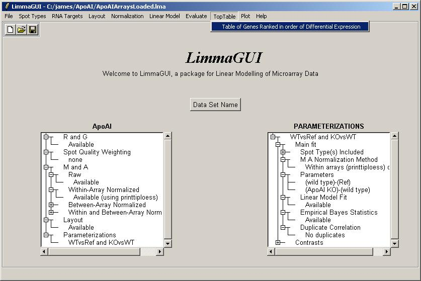Again, parameterization "WTvsRef and KOvsWT" is the only choice, so click OK.
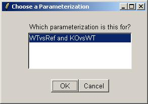Choose the "(ApoAI KO)-(wild type)" parameter.
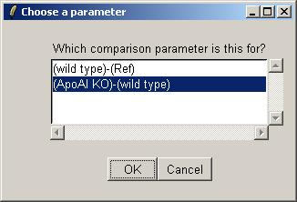Choose to view the top 50 genes with most evidence of differential expression (according to the B statistic). Leave the other options at their default values.
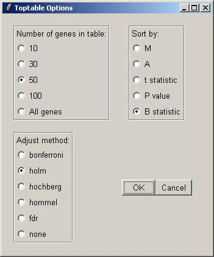The toptable is shown below. The knockout gene is correctly displayed at the top of the table with an M value of -3.184. Theoretically, its M value should be minus infinity because it is the knockout gene. You can (from the File menu) save the toptable as tab-delimited text and then open it in a spreadsheet program such as Excel.
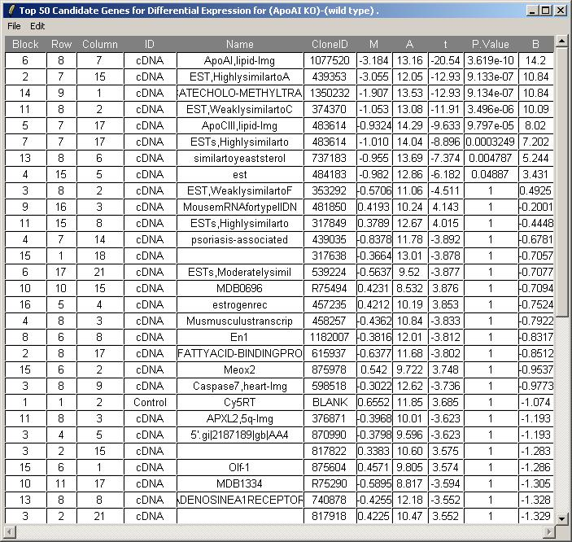Now select "Log Odds Plot" from the Plot menu. (The B statistic displayed in the TopTable is an estimate of the log odds.)
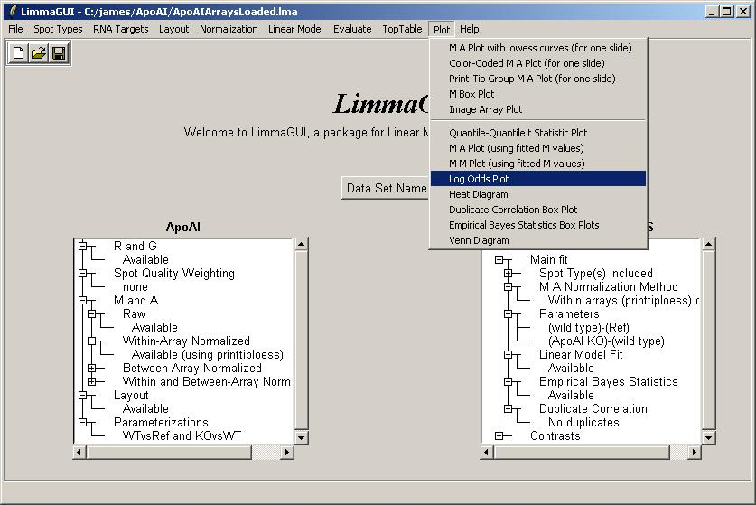Parameterization "WTvsRef and KOvsWT" is the only choice, so click OK.
Choose the "(ApoAI KO)-(wild type)" parameter.
Now you can select a number of differentially expressed genes to be labeled on the plot and the maximum label size in characters.
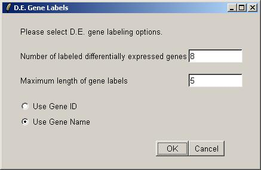The log odds plot is shown below.
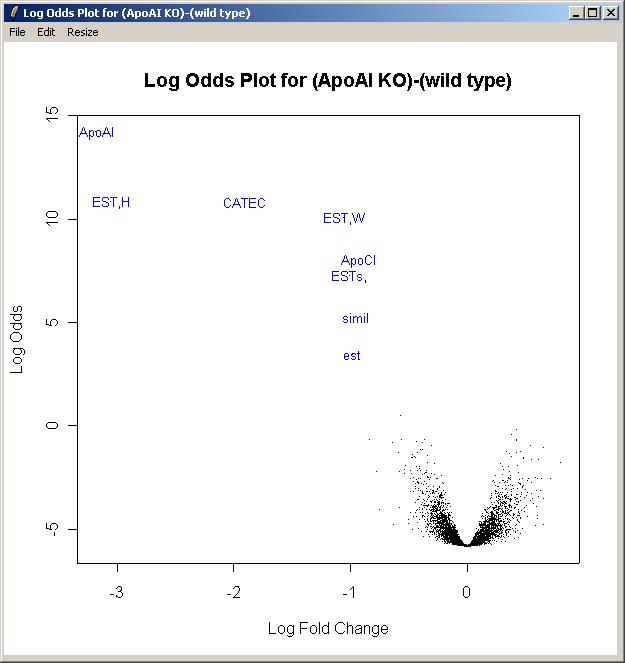An M A plot with fitted M values can plotted obtained in the same way as the log odds plot, but by choosing "M A Plot(using fitted M values)" from the plot menu, instead of "Log Odds Plot".
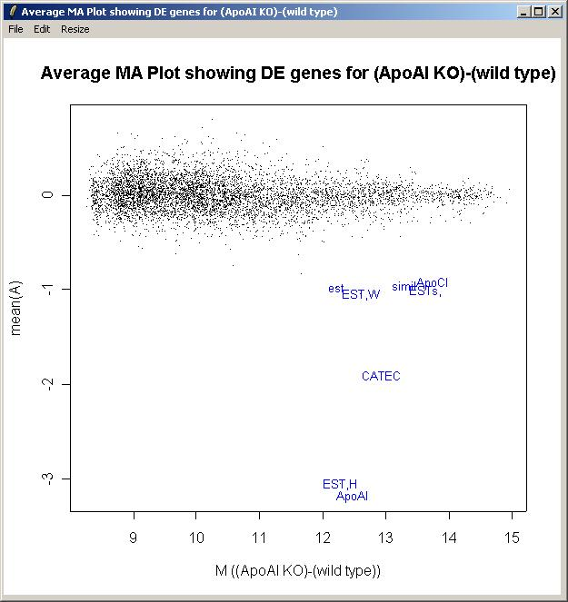You can save the updated Limma file (with a linear model fit now computed).
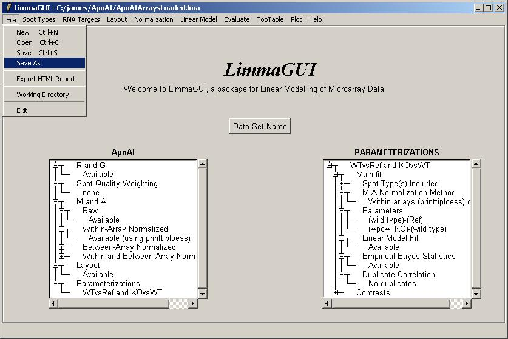It is possible to save multiple Limma files with the same data set name (displayed above the left status window) but with different file names (displayed in the title bar).
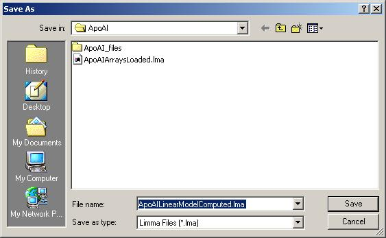Suppose that we are also interested in estimating log fold changes and confidence statistics for knockout (KO) versus reference (Ref). There is no need to compute a new linear model from scratch, we can express this contrast as a linear combination of the two parameters we estimated previously (KOvsWT and WTvsRef). In fact the log-ratio for KOvsRef is conceptually just the sum of the the log ratios for KOvsWT and WTvsRef, so it could be estimated quite well just using a standard spreadsheet program. However, computing confidence statistics for this contrast is never as straightforward as a simple addition, so this is best left to limma and limmaGUI.
From the "Linear Model" menu, click on "Compute Contrasts".
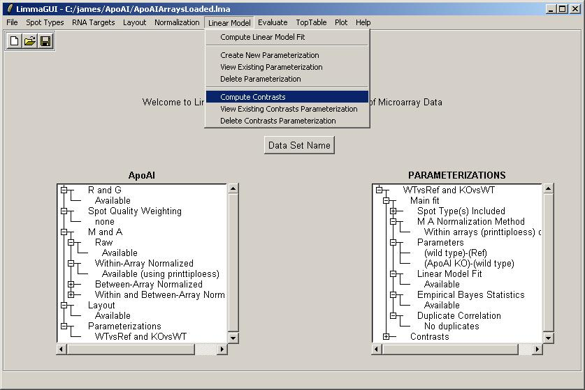Parameterization "WTvsRef and KOvsWT" is the only choice, so click OK.
The interface for choosing contrast(s) is similar to the interface for choosing parameters for the linear model. You can click on the "Advanced" button if you want to enter a contrasts matrix directly. One difference is that in the simpler (non-matrix) interface, the user is allowed to use "plus" or "minus" to form a linear combination of two parameters, whereas the interface for choosing parameters only allowed a "minus" between the two RNA types. In this case we will add our two parameters to form the contrast KOvsRef.
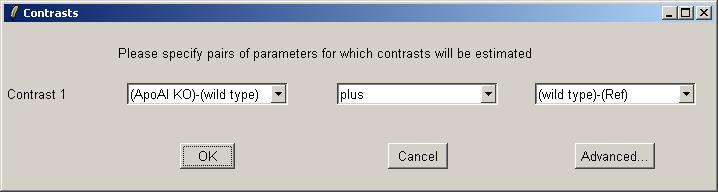Now we can give this contrasts parameterization a name.
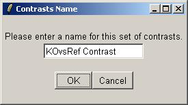Once the contrasts have been computed, they are displayed in the Parameterizations window.
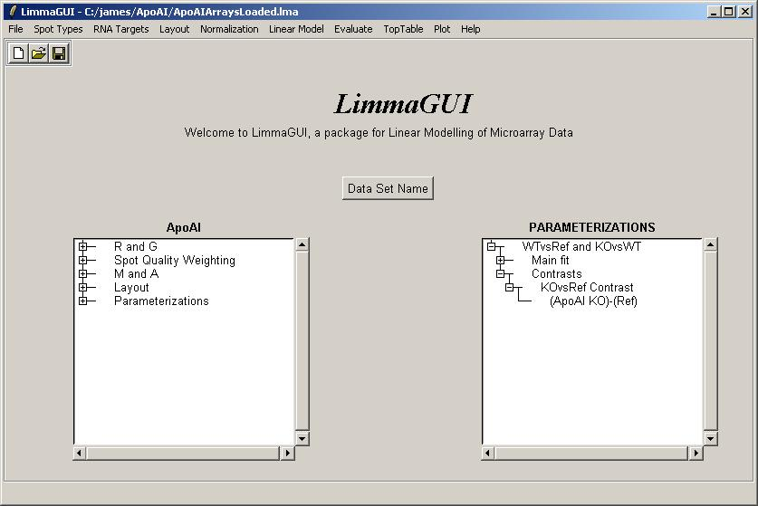Now whenever the user has a choice of which parameter to use, e.g. for a toptable, the contrasts will be available as well.
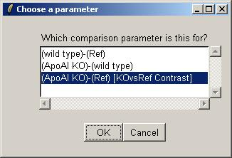Below is a toptable, using the KOvsRef contrast.
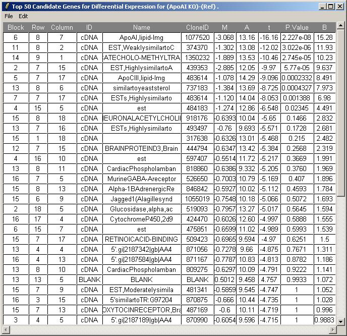